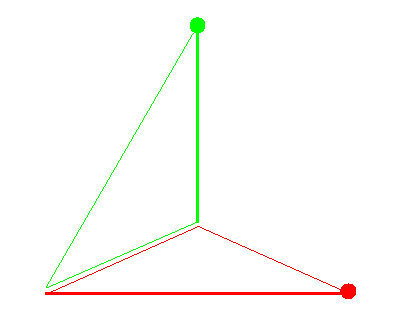

Specialization Sequence in P3


Specialization Sequence in P3 |
|
|  |
Consider a fixed flag in P3 consisting of a point lying on a line which lies in a plane. A flag opposite to this fixed flag consists of a point not lying in the fixed plane, a line not meeting the fixed line, and a plane not containing the fixed point. The specialization sequence is a specified way to move the opposite flag into special position with respect to the fixed flag so that they eventually coincide. |